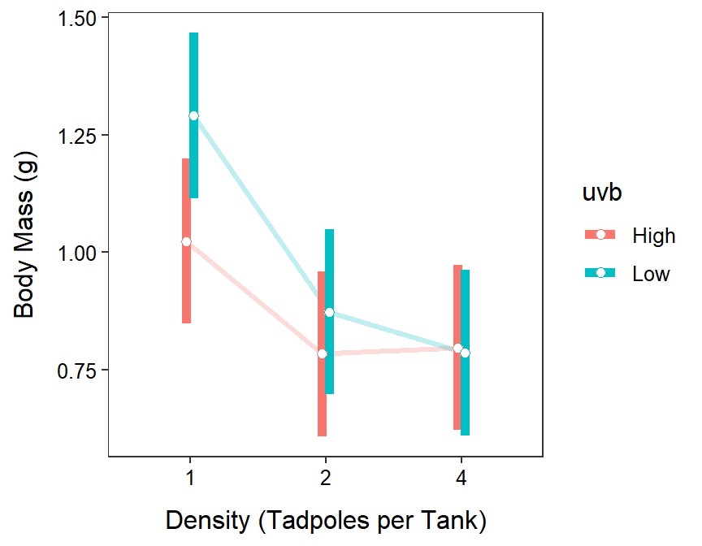

Module 12 Two-Way Analysis
In this module, a thorough Two-Way ANOVA will be performed using the experiment introduced in Module 11, where the effect of tadpole density and UV-B light intensity on tadpole body mass was examined.
12.1 Model Fitting in R
The data are loaded into R below. Because density was recorded as a number (i.e., 1, 2, and 4) rather than as an obvious grouping (i.e., “one,” “two,” and “four”), it must be explicitly converted to a factor before it can be used in a Two-Way ANOVA Model.
tad <- read.csv("http://derekogle.com/Book207/data/Tadpoles.csv")
tad$density <- factor(tad$density)
str(tad)#R> 'data.frame': 90 obs. of 3 variables:
#R> $ uvb : chr "High" "High" "High" "High" ...
#R> $ density: Factor w/ 3 levels "1","2","4": 1 1 1 1 1 1 1 1 1 1 ...
#R> $ mass : num 0.91 0.65 1.58 0.98 1.07 0.84 0.88 1.47 0.94 0.72 ...An explanatory (or factor) variable must be a character or factor type in R before it can be used in lm() for a Two-Way ANOVA.
When performing a Two-Way ANOVA with lm() the first argument must be a formula of the form response~factorA+factorB+factorA:factorB53 where response is the response variable, factorA and factorB are the two factor variables, and factorA:factorB tells lm() to include the interaction between the two factor variables. Thus, the Two-Way ANOVA model for the tadpole experiment is fit with
lm1 <- lm(mass~density+uvb+density:uvb,data=tad)As usual, the results are saved to an object that will be used to check assumptions, create an ANOVA table, and make multiple comparisons.
12.2 Assumptions
The assumptions for a Two-Way ANOVA are exactly the same as for a One-Way ANOVA as shown in Module 7. Thus, as described in that module, assumptionCheck() is used with the saved lm() object to compute tests and create graphics to assess the assumptions.
assumptionCheck(lm1)From these results it is seen that the variances across all treatments are equal (Levenes p=0.0776), the residuals are normally distributed (p=0.3332), and there are no significant outliers (p>1). There was not much information given previously about this experiment, but as along as the tanks of tadpoles were kept separate such that no tank could impact any other tank then independence is likely adequately met. The analysis can continue with the untransformed data because all assumptions are adequately met.
If the equal variances and normality assumptions (and possibly the no outliers assumption) are not met then try to transform the response variable to a scale where those assumptions are met. As before, start with the log transformation.
12.3 Main and Interaction Effects (ANOVA Table)
The ANOVA table is extracted from the lm() object with anova().
anova(lm1)#R> Analysis of Variance Table
#R>
#R> Response: mass
#R> Df Sum Sq Mean Sq F value Pr(>F)
#R> density 2 2.4337 1.21686 10.3814 9.355e-05
#R> uvb 1 0.3004 0.30044 2.5632 0.1131
#R> density:uvb 2 0.2989 0.14947 1.2752 0.2847
#R> Residuals 84 9.8461 0.11722These results indicate that the interaction effect is insignificant (p=0.2847). Because the interaction term is insignificant, the main effects can be interpreted. The density main effect is strongly significant (p=0.0001), but the UV-B main effect is not significant (p=0.1131). Thus, it appears that the mean body mass of tadpoles differs among some of the density treatments but not between the two UV-B light intensities.
Do not address main effects if there is a significant interaction effect.
12.4 Multiple Comparisons
12.4.1 Main Effects
When an interaction is not present, as is the case here, then multiple comparisons can be conducted for factors related to any main effect that exists. However, multiple comparisons on the main effects are compromised by the interaction term in the model. This is seen by the warning from emmeans() below, where I tried to perform multiple comparisons for just the density main effect using lm1 that contains the interaction term.
mc1 <- emmeans(lm1,specs=pairwise~density)Thus, if the interaction term is not significant then you should fit a new model without the interaction term and then use that model when performing multiple comparisons. A model without an interaction term simply uses a formula of the form response~factorA+factorB in lm(). The ANOVA table is shown below to confirm that the interaction term is not in this new model.
lm1_noint <- lm(mass~density+uvb,data=tad)
anova(lm1_noint)#R> Analysis of Variance Table
#R>
#R> Response: mass
#R> Df Sum Sq Mean Sq F value Pr(>F)
#R> density 2 2.4337 1.21686 10.3154 9.649e-05
#R> uvb 1 0.3004 0.30044 2.5469 0.1142
#R> Residuals 86 10.1450 0.11797To assess main effects with multiple comparisons, first fit (and then use) a model without the insignificant interaction term.
Multiple comparisons for a main effect factor variable are performed as described for a One-Way ANOVA in Section 6.3, but using the new model without the interaction term.
mc1_noint <- emmeans(lm1_noint,specs=pairwise~density)
( mc1sum_noint <- summary(mc1_noint,infer=TRUE) )#R> $emmeans
#R> density emmean SE df lower.CL upper.CL t.ratio p.value
#R> 1 1.157 0.0627 86 1.033 1.282 18.456 <.0001
#R> 2 0.829 0.0627 86 0.704 0.953 13.215 <.0001
#R> 4 0.791 0.0627 86 0.667 0.916 12.620 <.0001
#R>
#R> Results are averaged over the levels of: uvb
#R> Confidence level used: 0.95
#R>
#R> $contrasts
#R> contrast estimate SE df lower.CL upper.CL t.ratio p.value
#R> 1 - 2 0.3287 0.0887 86 0.117 0.540 3.706 0.0011
#R> 1 - 4 0.3660 0.0887 86 0.154 0.578 4.127 0.0002
#R> 2 - 4 0.0373 0.0887 86 -0.174 0.249 0.421 0.9070
#R>
#R> Results are averaged over the levels of: uvb
#R> Confidence level used: 0.95
#R> Conf-level adjustment: tukey method for comparing a family of 3 estimates
#R> P value adjustment: tukey method for comparing a family of 3 estimatesAgain, results for the individual means are in the $emmeans portion of the output and the results for differences in paired means are in the $contrasts portion. From these results, it is seen that the mean body mass of tadpoles in the 1 tadpole treatment is between 0.117 and 0.540 g greater than the mean for the 2 tadpole treatment (p=0.0011) and between 0.154 and 0.578 g greater than the mean for the 4 tadpole treatment (p=0.0002). The mean body mass of tadpoles did not significantly differ between the 2 and 4 tadpole treatments (p=0.9070).
12.4.2 Interaction Effects
If an interaction effect had been present in the original Two-Way ANOVA model, multiple comparisons must be carried out to determine which pairs of treatment means differ. This is easily accomplished with emmeans() by using the interaction variable in the pairwise~ formula. For example, if lm1 had had a significant interaction term, then multiple comparisons for all pairs of treatments would be computed as follows.
mc1 <- emmeans(lm1,specs=pairwise~density:uvb)
( mc1sum <- summary(mc1,infer=TRUE) )#R> $emmeans
#R> density uvb emmean SE df lower.CL upper.CL t.ratio p.value
#R> 1 High 1.023 0.0884 84 0.848 1.199 11.576 <.0001
#R> 2 High 0.784 0.0884 84 0.608 0.960 8.869 <.0001
#R> 4 High 0.797 0.0884 84 0.621 0.972 9.012 <.0001
#R> 1 Low 1.291 0.0884 84 1.116 1.467 14.608 <.0001
#R> 2 Low 0.873 0.0884 84 0.698 1.049 9.879 <.0001
#R> 4 Low 0.786 0.0884 84 0.610 0.962 8.892 <.0001
#R>
#R> Confidence level used: 0.95
#R>
#R> $contrasts
#R> contrast estimate SE df lower.CL upper.CL t.ratio p.value
#R> 1 High - 2 High 0.2393 0.125 84 -0.1253 0.6039 1.914 0.4007
#R> 1 High - 4 High 0.2267 0.125 84 -0.1379 0.5913 1.813 0.4631
#R> 1 High - 1 Low -0.2680 0.125 84 -0.6326 0.0966 -2.144 0.2754
#R> 1 High - 2 Low 0.1500 0.125 84 -0.2146 0.5146 1.200 0.8357
#R> 1 High - 4 Low 0.2373 0.125 84 -0.1273 0.6019 1.898 0.4103
#R> 2 High - 4 High -0.0127 0.125 84 -0.3773 0.3519 -0.101 1.0000
#R> 2 High - 1 Low -0.5073 0.125 84 -0.8719 -0.1427 -4.058 0.0015
#R> 2 High - 2 Low -0.0893 0.125 84 -0.4539 0.2753 -0.715 0.9797
#R> 2 High - 4 Low -0.0020 0.125 84 -0.3666 0.3626 -0.016 1.0000
#R> 4 High - 1 Low -0.4947 0.125 84 -0.8593 -0.1301 -3.957 0.0021
#R> 4 High - 2 Low -0.0767 0.125 84 -0.4413 0.2879 -0.613 0.9898
#R> 4 High - 4 Low 0.0107 0.125 84 -0.3539 0.3753 0.085 1.0000
#R> 1 Low - 2 Low 0.4180 0.125 84 0.0534 0.7826 3.344 0.0152
#R> 1 Low - 4 Low 0.5053 0.125 84 0.1407 0.8699 4.042 0.0016
#R> 2 Low - 4 Low 0.0873 0.125 84 -0.2773 0.4519 0.699 0.9816
#R>
#R> Confidence level used: 0.95
#R> Conf-level adjustment: tukey method for comparing a family of 6 estimates
#R> P value adjustment: tukey method for comparing a family of 6 estimatesAs before, results for the individual means are in the $emmeans portion of the output and the results for differences in paired means are in the $contrasts portion. While this is not an appropriate for this hypothetical set of results, one can see in the results above that the mean body mass for tadpoles in the 4 tadpole and high UVB treatment is between 0.130 and 0.859 less than that for tadpoles in the 1 tadpole and low UVB treatment (p=0.0021).
If a significant interaction term is present, then use multiple comparisons (with the model that has the interaction term) to determine which treatment means differ.
12.5 Graphing Results
12.5.1 Interaction Plot
The results of a Two-Way ANOVA are summarizaed in an interaction plot whether a significant interaction was present in the results or not. An interaction plot, which was introduced in Module 10, shows each treatment mean with the levels of one factor on the x-axis and the levels of other factor shown with different colors or symbols and sometimes connected with a line. The interaction plots made in this and subsequent modules will also include a confidence intervals for each treatment mean.
The method shown below requires having saved the summary of the multiple comparisons procedure applied to the model that included the interaction term. This was created above and saved as mc1sum. The data to be plotted is in the $emmeans portion of this object (shown below for convenience).
mc1sum$emmeans#R> density uvb emmean SE df lower.CL upper.CL t.ratio p.value
#R> 1 High 1.023 0.0884 84 0.848 1.199 11.576 <.0001
#R> 2 High 0.784 0.0884 84 0.608 0.960 8.869 <.0001
#R> 4 High 0.797 0.0884 84 0.621 0.972 9.012 <.0001
#R> 1 Low 1.291 0.0884 84 1.116 1.467 14.608 <.0001
#R> 2 Low 0.873 0.0884 84 0.698 1.049 9.879 <.0001
#R> 4 Low 0.786 0.0884 84 0.610 0.962 8.892 <.0001
#R>
#R> Confidence level used: 0.95Specifically, we want to plot the results in the emmean column with the confidence intervals in lower.CL and upper.CL against one of the factor variables. One issue that arises is that the confidence intervals for the multiple treatments defined by one level of the variable on the x-axis overlap. Thus, before plotting, a “dodge” amount is defined with position_dodge() that will shift the levels slightly left and right to eliminate the overlap. The width= argument defines the amount of shift. You may need to “play” with this value to get the exact look that you want.
pd <- position_dodge(width=0.1)The summary graphic is constructed with the code below. This code is similar to what was used for the summary graphic of a One-Way ANOVA in Section 6.3. However, this code is somewhat simpler because the individual observations are not plotted to eliminate clutter. Further, note
- the use of
mc1sum$emmeansas the data, - the use of
density(i.e., one of the factor variables) asx=, - the use of
uvb(i.e., the other factor variale) ingroup=(so it will be “dodged”) andcolor=(so it will be denoted with different colors), - that
geom_line()is placed first so that the points and confidence intervals will be on top of the connecting lines, - that
alpha=is used ingeom_line()so that the lines are subtle, and - the use of
pdfromposition_dodge()above ingeom_pointrange().
ggplot(data=mc1sum$emmeans,mapping=aes(x=density,group=uvb,color=uvb,
y=emmean,ymin=lower.CL,ymax=upper.CL)) +
geom_line(position=pd,size=1.1,alpha=0.25) +
geom_errorbar(position=pd,size=2,width=0) +
geom_point(position=pd,size=2,pch=21,fill="white") +
labs(y="Body Mass (g)",x="Density (Tadpoles per Tank)") +
theme_NCStats()
12.5.2 Main Effects Plot
Some researchers prefer to plot just the main effects when there is no significant interaction effect in the data. Such a plot is called a main effects plot and can be constructed similarly from the multiple comparison results using the model without an interaction term. Note that group=1 must be used as shown below so that geom_line() will work properly.
ggplot(data=mc1sum_noint$emmeans,
mapping=aes(x=density,group=1,y=emmean,ymin=lower.CL,ymax=upper.CL)) +
geom_line(size=1.1,alpha=0.25) +
geom_errorbar(size=2,width=0) +
geom_point(size=2,pch=21,fill="white") +
labs(y="Body Mass (g)",x="Density (Tadpoles per Tank)") +
theme_NCStats()This exact model may also be entered with the shorthand
response~factorA*factorB.↩︎